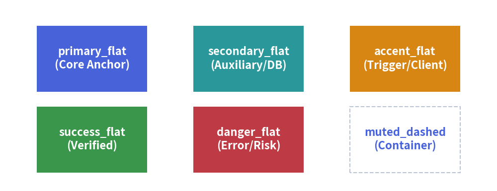

Styles & Theming
In complex technical diagrams, manually configuring RGB color codes, line widths, and font sizes for every single element leads to inconsistent branding and brittle drawing code.
Drawlib resolves this with a systematic design token system in drawlib.styles and drawlib.preset_styles.
1. Overview of Semantic Styles

2. Active Design Tokens (drawlib.styles)
The active design system is imported from drawlib.styles:
from drawlib.styles import Colors, Styles
Styles: The active catalog of pre-configuredStyleobjects (defaults toDefaultStyles).Colors: The active palette of color definitions (defaults toDefaultColors).
3. Semantic Role & Variant Matrix
Every style token is composed of a Semantic Role (or color name) and an optional Visual Variant:
Semantic Roles:
primary: Main structural components and key architectural blocks.secondary: Secondary supporting services and auxiliary nodes.accent: Emphasized focal points and action triggers.success: Healthy statuses, successful states, and completed steps.danger: Error conditions, security threats, and terminating gates.warning: Warnings, deprecations, and pending queues.muted: Background boundaries, subtle partitions, and inactive states.
Common Variants:
| Variant Suffix | Example | Visual Appearance |
|---|---|---|
_flat |
Styles.primary_flat |
Solid fill color without border lines. |
_bordered |
Styles.primary_bordered |
Standard fill with a contrasting border. |
_bold |
Styles.primary_bold |
Heavy stroke for lines and borders. |
_light |
Styles.primary_light |
Soft, pastel fill color. |
_outline |
Styles.primary_outline |
Transparent fill with a colored border line. |
_dashed |
Styles.muted_dashed |
Dashed border stroke (ideal for VPCs and clusters). |
4. Systematic String Shorthands
Instead of importing Styles, you can use string shortcuts directly in drawing functions:
# Shorthand string is resolved dynamically
rectangle((50, 25), width=30, height=20, style="blue_flat")
line((20, 25), (80, 25), arrowhead="->", style="bold")
5. Customizing & Deriving Styles (.patch())
To create custom style variations without rebuilding a Style from scratch, use .patch():
from drawlib.styles import Styles
from drawlib.preset_colors import Colors140
# Derive a custom card style with a custom border and fill
custom_card = Styles.primary.patch(
shape_fill_color=Colors140.AliceBlue,
shape_line_color=Colors140.DodgerBlue,
shape_line_width=2.5,
)
6. Official Preset Style Catalogs (drawlib.preset_styles)
Drawlib includes three official style catalogs:
DefaultStyles: Clean, balanced modern tech palette.GoogleStyles: Material Design inspired palette (Blue, Red, Yellow, Green).MonochromeStyles: Publication-grade grayscale palette for black-and-white academic papers.
Switch the active preset globally via CLI flag:
$ uv run drawlib build html docs_src/ --styles google